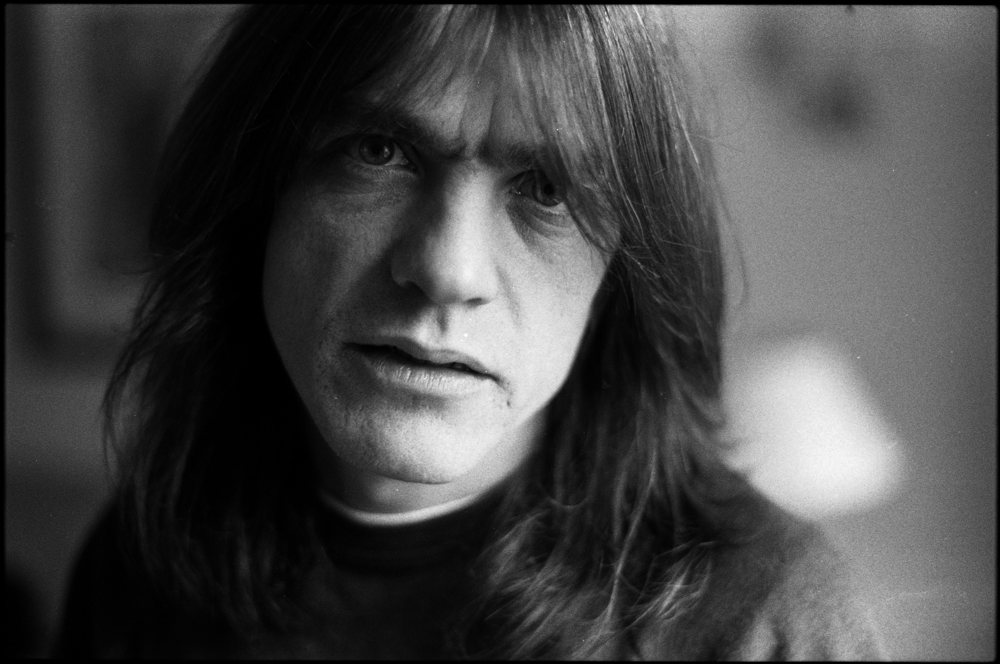

Dilahirkan dengan nama Malcolm Mitchell Young pada 6 Januari 1953 di Glasgow, Skotlandia, adalah gitaris Australia yang telah pensiun yang dikenal sebagai pendiri, gitaris ritem, vokalis latar dan penulis lagu untuk band hard rock Australia AC/DC. Pengecualian untuk absen singkat pada tahun 1988, dia bersama band dari awalnya pada November 1973 sampai pensiun secara permanen pada tahun 2014, karena alasan kesehatan. Youg dan anggota lain dari AC/DC telah dilantik ke dalam Rock and Roll Hall of Famepada tahun 2003.
Setelah pecahnya band berbasis Newcastle The Velvet Underground (bukan band 1960an dengan Lou Reed), Young mendirikan AC/DC pada bulan November 1973, dan segera meminta Angus untuk bergabung ketika mereka masing-masing berusia 20 dan 18 tahun. Mereka mulai melakukan tur nasional pada tahun 1974 dengan penyanyi Dave Evans.
AC/DC pindah ke Inggris pada tahun 1976, dan mulai jadwal tur internasional yang berat dan rekaman. Setelah kematian vokalis Bon Scott pada tahun 1980, mereka merekam album terlaris-terbesar mereka Back in Black dengan penyanyi Brian Johnson.
Young mengambil cuti dari AC/DC pada bulan April 2014, untuk menerima pengobatan untuk demensia. Pada tanggal 26 September 2014, Sydney Morning Herald melaporkan bahwa Young menderita demensia dan telah dirawat di sebuah panti jompo di mana ia dapat menerima perawatan penuh waktu. Sebuah sumber yang dekat dengan Young mengutip dalam artikel ini mengatakan: "Dia kehilangan memori jangka pendek".
Malcolm Young meninggal dunia dalam usia 64 tahun, Sabtu, 19 November 2017. Malcolm meninggal dunia setelah tiga tahun harus mengalami demensia.
Majalah Guitar Player menyatakan bahwa rahasia teknik gitar Young adalah memainkan akord terbuka melalui serangkaian amplifier menengah yang diatur dengan volume rendah dengan sedikit atau tidak ada ‘gain’. Hal ini bertentangan dengan kepercayaan umum dari banyak gitaris rock bahwa gitar ritem harus melibatkan power chords keras dan overdrive melalui amplifier besar.